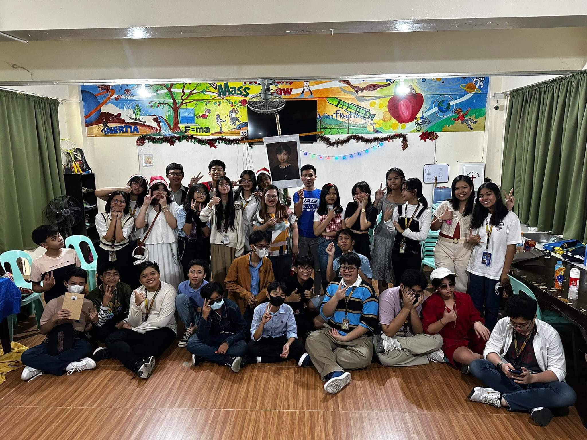

8-Diamond
ICT PT#1 Sy. 2023-2024: 8-Diamond By: Klaude Monet G. Sangoyo and John Seong Teh Antopina

<--- CLICK HERE :))

About Us
Shine Bright Like A Diamond: 8-Diamond Website Within the Sci-Hi corridors, There is always a section filled with love and laughter, everyone’s beloved section 8-Diamond. The purpose of this website is to highlight the different activities and accomplishments of our section. All of our goals, occasions and achievements that have shaped our development we will thrive and grow stronger than ever. The purpose of this website is to act as a documentations of memories and moments for the viewers and those in the 8-Diamond. To celebrate our group accomplishments and to look back at memories that we will cherish forever.